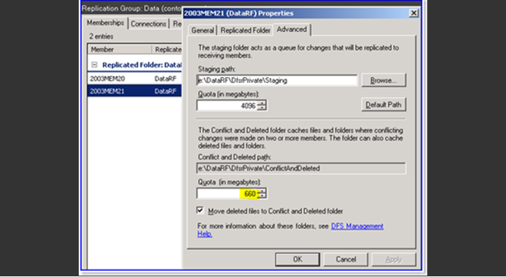

Manually Clearing the ConflictAndDeleted Folder in DFSR
How to: Manually Clearing the ConflictAndDeleted Folder in DFSR
Step 1: Using WMI to clear ConflictAndDeleted Folder
Open a CMD prompt as an administrator on the DFSR server.
Step 2: Get the GUID of the Replicated Folder you want to clean:
WMIC.EXE /namespace:\\root\microsoftdfs path dfsrreplicatedfolderconfig get replicatedfolderguid,replicatedfoldername
Step 3: Then call the CleanupConflictDirectory method:
WMIC.EXE /namespace:\\root\microsoftdfs path dfsrreplicatedfolderinfo where "replicatedfolderguid='<RF GUID>'" call cleanupconflictdirectory
Example output with a sample GUID:
WMIC.EXE /namespace:\\root\microsoftdfs path dfsrreplicatedfolderinfo where "replicatedfolderguid='70bebd41-d5ae-4524-b7df-4eadb89e511e'" call cleanupconflictdirectory
Step 4: At this point the ConflictAndDeleted folder will be empty and the ConflictAndDeletedManifest.xml will be deleted.
Step 5: Emptying the ConflictAndDeleted folder when in an error state
ConflictAndDeleted folder quota not being honored by DFSR.
Step 6: Here's where quota is set:

Usually this problem occurs when, the ConflictAndDeletedManifest.XML file has grown to hundreds of MB in size. When you try to open the file in an XML parser or in Internet Explorer, you will receive an error like "The XML page cannot be displayed" or that there is an error at line X. This is because the file is invalid at some section (with a damaged element, scrambled data, etc).
Step 7: To fix this issue:
1. Follow steps 1-4 from above. This may clean the folder as well as
update DFSR to say that cleaning has occurred. We always want to try
doing things the 'right' way before we start hacking.
2. Stop the DFSR service.
3. Delete the contents of the ConflictAndDeleted folder manually (with
explorer.exe or DEL).
4. Delete the ConflictAndDeletedManifest.xml file.
5. Start the DFSR service back up.